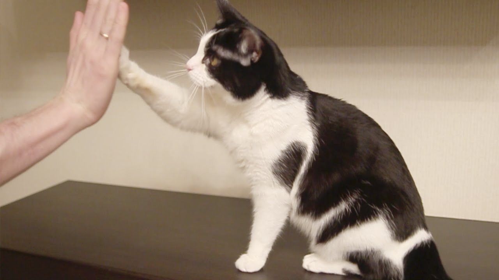

Contrary to popular belief, cats are highly intelligent and can be trained! At PurrPets, we focus on Positive Reinforcement to help your cat learn house rules and even a few "party tricks."

Use this table to understand the three pillars of successful feline education:
| Pillar | The Method | The Goal |
|---|---|---|
| Timing | Reward the behavior within 2 seconds. | Helps the cat connect the action to the treat. |
| Motivation | Use tuna, chicken, or "lickable" treats. | Makes the training worth their effort. |
| Short Sessions | Keep training to 5 minutes or less. | Prevents the cat from getting bored or annoyed. |
Just like dogs, cats respond amazingly well to Clicker Training. The sound of the "click" tells them exactly when they did something right, followed immediately by a reward.